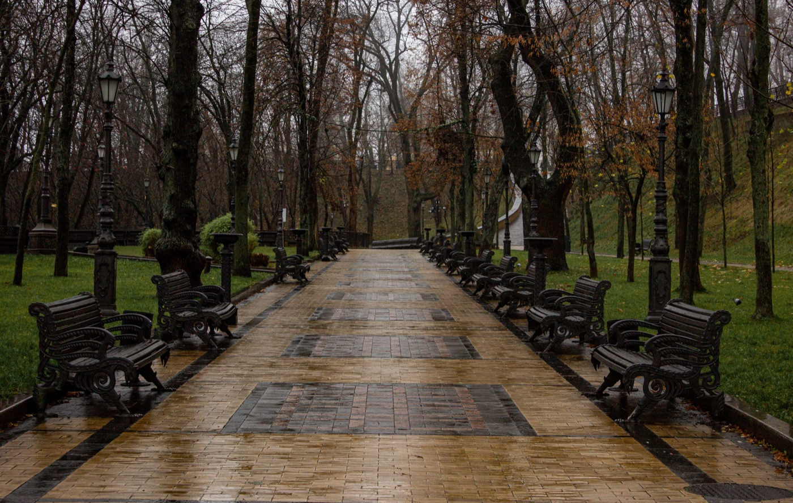

Как ездить на байке при сильном ветре

Лёгкий скутер заметно реагирует на боковой ветер. Особенно опасны резкие порывы при выезде из-за здания, автобуса или скалы: воздушный поток меняется мгновенно. Лучшее решение при штормовом предупреждении — перенести поездку, но умеренный ветер тоже требует другой техники.
До старта
Оцени не только среднюю скорость ветра, но и порывы, дождь и состояние маршрута. Проверь шины, тормоза и крепление багажа. Сними широкую свободную одежду, закрепи ремни шлема и рюкзака. Большой чехол, пакет или пончо превращаются в парус и могут попасть к колесу.
Снизь скорость, но двигайся ровно
Высокая скорость уменьшает время на реакцию, а слишком резкое замедление посреди потока создаёт новую опасность. Выбери спокойный темп, увеличь дистанцию и держи обе руки на руле. Не зажимай руль до напряжения: скованные руки хуже гасят небольшие движения байка.
Где ждать порыв
- на мосту и открытой набережной;
- при обгоне грузовика или автобуса;
- на выходе из-за высокого здания;
- между холмом и открытым берегом;
- на участках с деревьями, флагами и вывесками, резко отклонёнными в сторону.
Перед таким местом снизь скорость заранее и оставь боковой запас. Не едь вплотную рядом с крупным транспортом: сначала он закрывает ветер, затем при выходе из его воздушной тени байк получает резкий толчок.
Как реагировать на боковой ветер
Смотри вдаль по нужной траектории, держи ровный газ и делай небольшую плавную коррекцию рулём и положением корпуса. Не отвечай на порыв резким движением. Если байк сносит в пределах полосы, запас пространства позволяет спокойно вернуться на линию движения.
Повороты и торможение
Сильнее снижай скорость до поворота и оставляй больше запаса сцепления. На наклонённый байк порыв влияет заметнее. Тормози плавно обоими тормозами, по возможности на прямом участке. При сочетании ветра, дождя и песка риск возрастает сразу по нескольким причинам.
Пассажир и груз
Пассажир меняет баланс, а высокий груз увеличивает боковую площадь. Перед поездкой объясни пассажиру, что нельзя внезапно наклоняться. Тяжёлые вещи располагай низко и по центру, всё закрепляй ремнями. При сильном ветре лучше отказаться от крупного груза и поездки вдвоём.
Когда нужно остановиться
Если не получается удерживать полосу, ветки падают, песок закрывает обзор или байк заметно переставляет порывами, найди капитальное укрытие вдали от деревьев, щитов и проводов. Не останавливайся на мосту и не прячься там, где байк может опрокинуться на проезжую часть.
Короткий вывод
Ветер требует свободных рук, меньшей скорости, дополнительного пространства и готовности отказаться от поездки. Перед выездом используй чек-лист байка, а для перевозки груза прочитай статью как закреплять вещи.